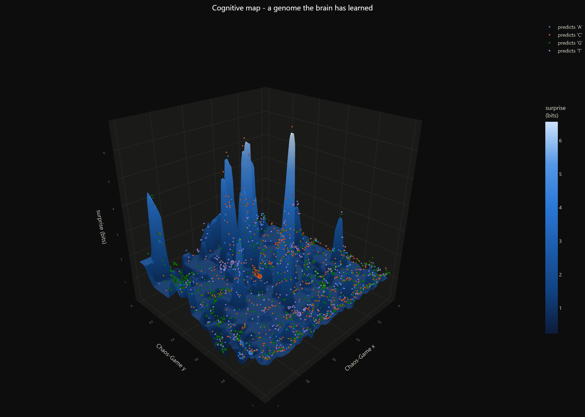
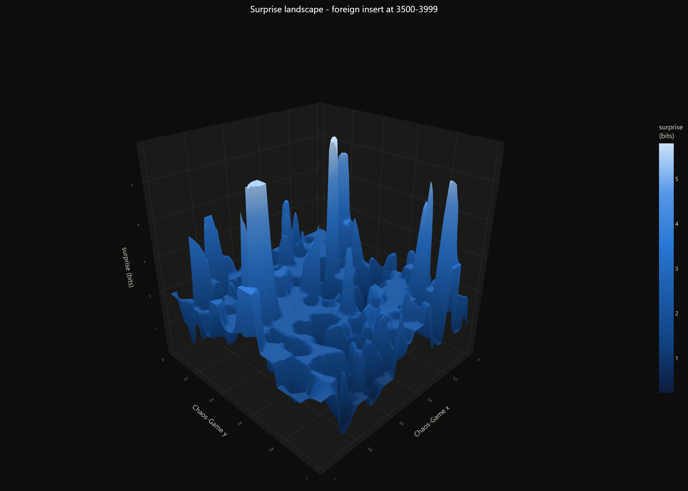
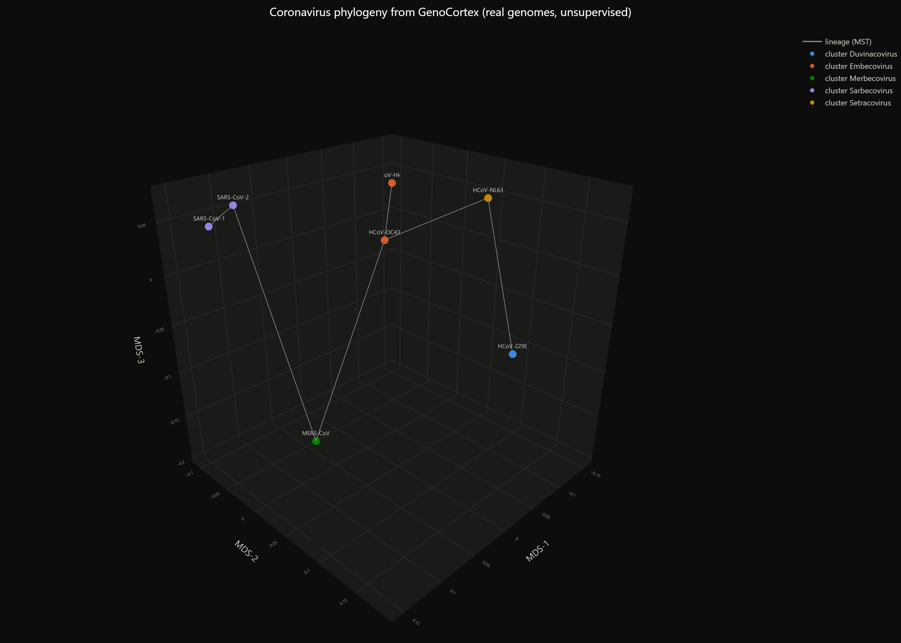
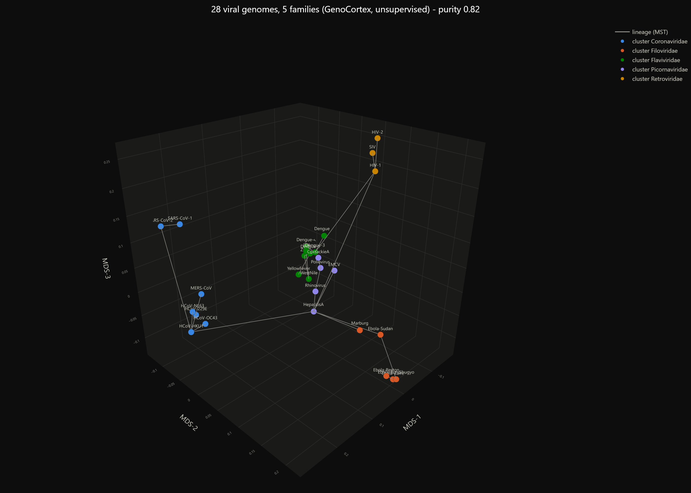
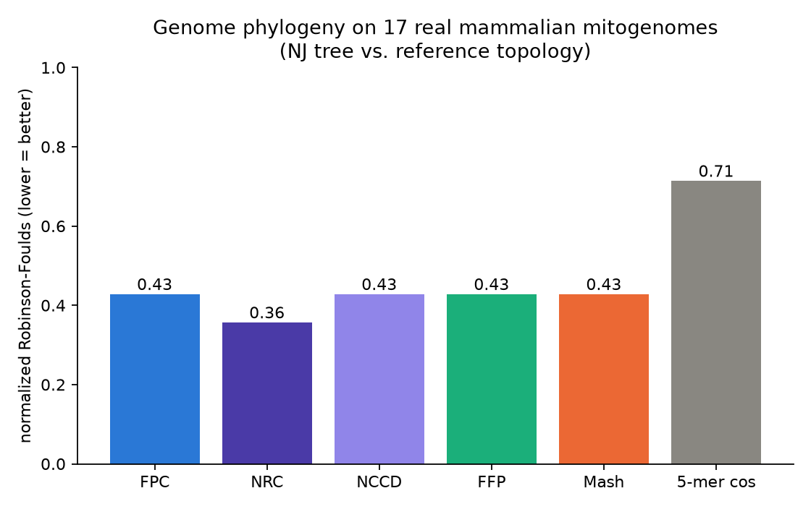
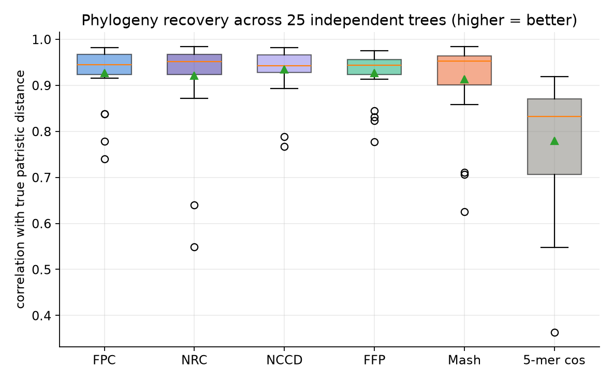
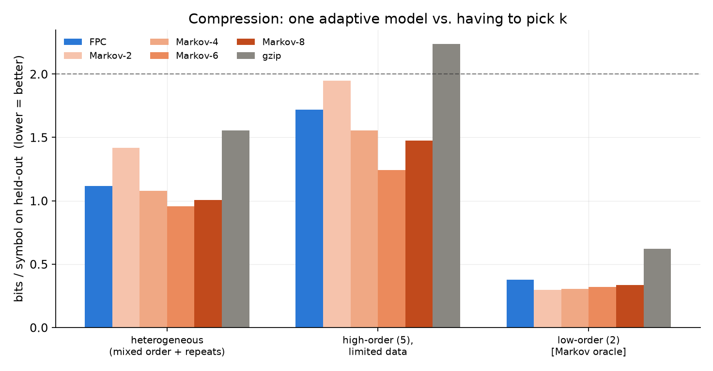
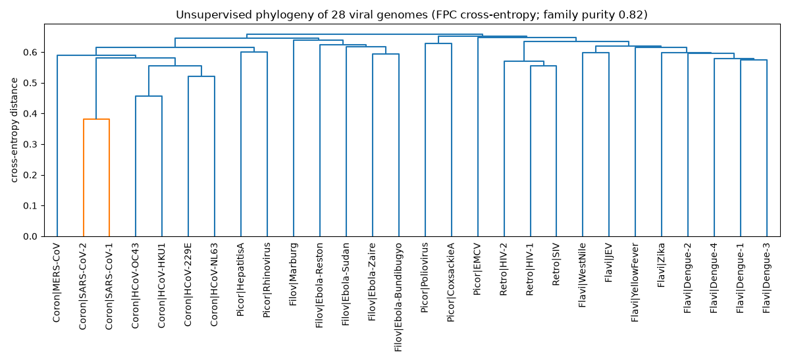

GenoCortex streams DNA, RNA, or protein sequences through a continuous Chaos Game Representation, grows adaptive predictive prototypes where it is most surprised, and turns a single information-theoretic signal (−log₂ P) into pathogenicity-island discovery, strand-aware read classification, Neighbour-Joining phylogenetics, and sequence prediction — with zero pretrained weights, zero alignment, and megabase-per-second ANSI C & Web Worker execution.
Run the real mathematical engine locally in your browser via a dedicated Web Worker (bit-exact with the C/Python CLI).
Upload your own .fasta, .fna, .fastq, or .gz files, paste raw sequences, or fetch live RefSeq genomes straight from NCBI E-utilities — your sequence data never touches a backend server.
| Contig | Interval (0-based) | Length | Peak Z | Bits/bp (Δbase) | GC (Δhost) | BH q-value | Call |
|---|
| Query ID | Length | Predicted Class | Strand | Bits/bp | Posterior | Runner-up (Δbits) |
|---|
P(s | prefix)
GenoCortex maps a sequence through a Chaos Game Representation, turning variable-length
preceding context into coordinates in [0, 1]². An adaptive set of predictive
prototypes indexed by an exact power-of-2 spatial grid (32×32 to 256×256) grows wherever predictive
surprise (−log₂ P) spikes. All four sequence capabilities are direct read-outs of that
single description-length objective:
Gaussian-blended next-symbol distribution P(next | CGR context) with automatic variable-order smoothing.
Local-entropy-normalised excess surprise CE(W) − H₀(W) flags AT-rich PAIs & GC-rich morons with Benjamini–Hochberg FDR control.
Assign unoriented FASTA/FASTQ reads to the reference cortex that is least surprised on either + or − strand.
Strand-invariant symmetric cross-entropy distance feeds pure-NumPy Saitou–Nei Neighbour-Joining phylogenetics.
Self-contained interactive 3-D scenes showing how the cortex organises real viral and synthetic genomes in Chaos Game space.

A learned genome's "surprise landscape": valleys are mastered motifs, peaks are novelty; memory cells float above, coloured by the base they predict.
Open interactive 3-D →
A reference genome's surprise spikes over a spliced-in foreign segment — how the model localises inserts and contamination.
Open interactive 3-D →
Seven real coronaviruses placed unsupervised by cross-entropy distance; the closely related pairs group correctly.
Open interactive 3-D →
Coronaviridae, Flaviviridae, Filoviridae, Picornaviridae, Retroviridae — each family occupies its own region of the map.
Open interactive 3-D →Every number is reproducible from the open-source scripts (fixed seeds; real RefSeq genomes cached after first download). Where specialised tools win, that is stated plainly.
| Task | GenoCortex | Baselines | Outcome |
|---|---|---|---|
| Megabase HGT & pathogenicity islands (E. coli O157:H7 5.50 Mb vs K-12 4.64 Mb) | 5/5 canonical loci in 15.5 s | Double-strand ANSI C kernel (10.14 Mb) | recovers LEE, SpLE1, SpLE3 & Stx1/Stx2 prophage morons (BH FDR q < 0.01) |
| Phylogeny — 25 synthetic trees (Pearson r) | 0.93 | FFP 0.93 · NCCD 0.93 · NRC 0.92 · Mash 0.91 · k-mer cos 0.78 | statistically tied with FFP/Mash/NRC/NCCD; beats k-mer cosine |
| Phylogeny — 17 real mitogenomes (Robinson–Foulds, lower better) | 0.43 | NRC 0.36 · NCCD/FFP/Mash 0.43 · k-mer cos 0.71 | ties the standard tools; slightly behind NRC |
| Short-read classification (150 bp, unoriented +/−) | 100% | k-mer+1NN 97% · logistic 94% | calls both taxon and strand (+/−) accurately |
| Compression (bits/symbol) | beats gzip | near best hand-tuned Markov-k | competitive, no fixed k-mer table explosion |
| Foreign-insert detection (ROC-AUC) | ~1.0 | 8-mer novelty ~1.0 | parity; adds per-position surprise + BED/BedGraph |
| Deep-divergence viral families (purity) | 0.82 | FFP 0.93 | FFP is more accurate here |




ANSI C spatial-grid extension compiles automatically when a C compiler is present (falls back cleanly to pure NumPy/SciPy). Python ≥ 3.10.
git clone https://github.com/rafi28-png/genocortex.git
cd genocortex
pip install -e .[all]
# 1. Scan a 5.5 Mb pathogenic chromosome against a commensal reference -> BED + BedGraph
genocortex scan O157_Sakai.fna.gz --ref K12_MG1655.fna.gz --bed islands.bed --bedgraph surprise.bedgraph
# 2. Train a zero-pickle multi-class panel & classify unoriented FASTQ.gz reads with Phred masking
genocortex train --by-file refs/*.fna -o panel.fpc.npz
genocortex classify reads.fastq.gz --model panel.fpc.npz --min-phred 20 -o calls.tsv
# 3. Build a strand-invariant Neighbour-Joining Newick tree & distance matrix
genocortex tree genomes/*.fna -o phylogeny.nwk --matrix distances.tsv
# 4. Run the real 10.14 Mb E. coli K-12 vs O157:H7 pathogenicity-island study
python examples/bacterial_islands.py.fpc.npz archives store only typed IEEE-754 arrays and UTF-8 JSON metadata (loaded with allow_pickle=False), making trained cortices safe to share across labs and pipelines.